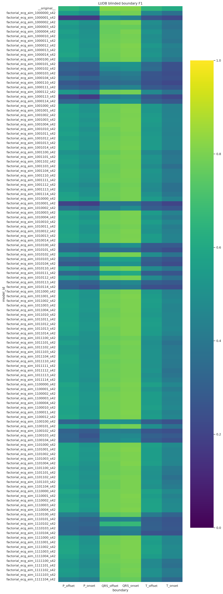
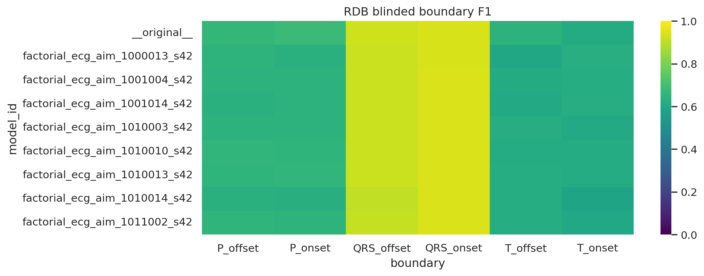
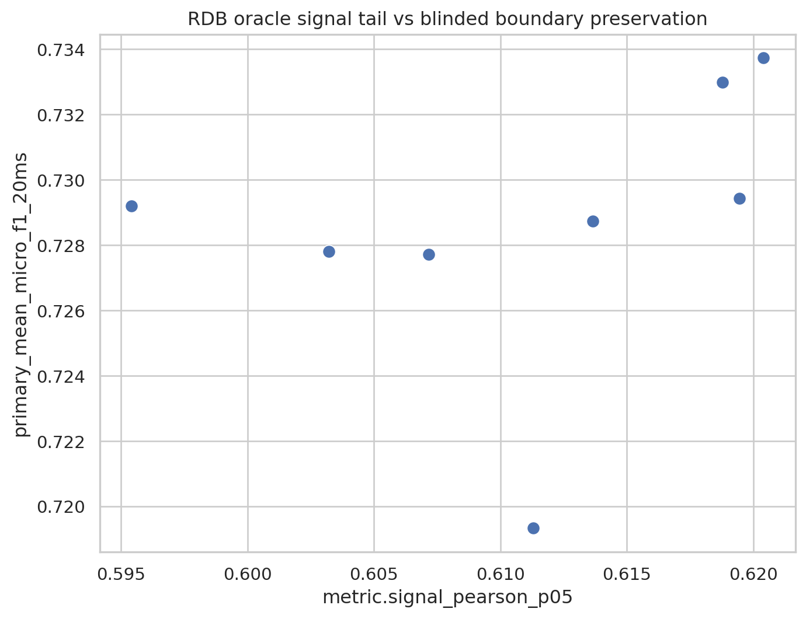
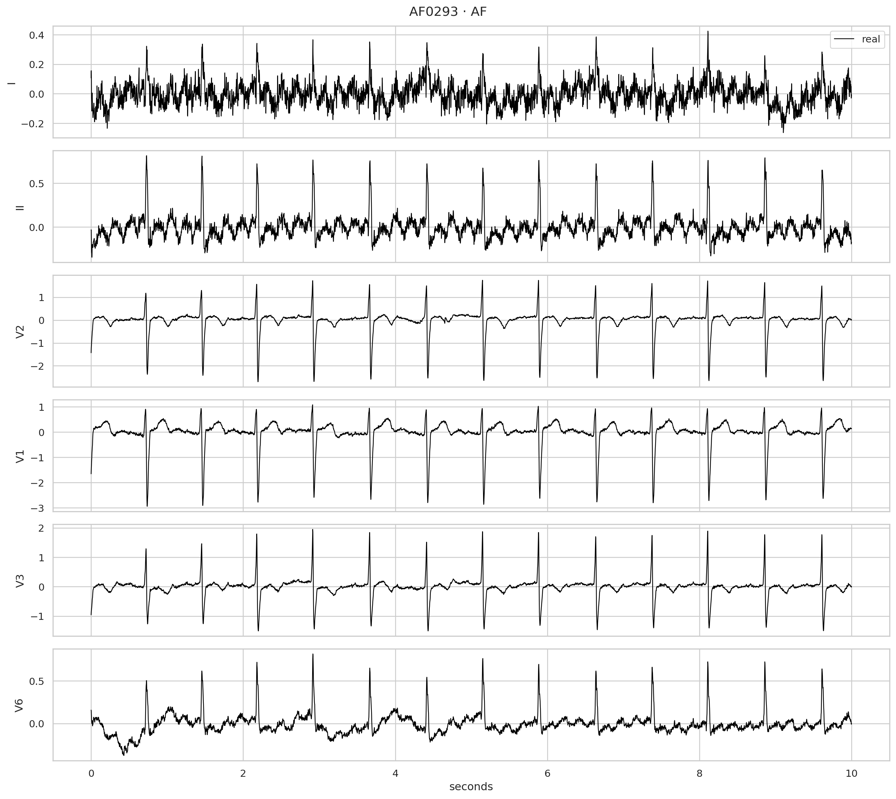

Code
# Edit these controls and rerun.
TOP_K=10; RECORD_ID='AF0293'; RDB_SPLIT='test'; VIEW_LEADS=['I','II','V2','V1','V3','V6']; WINDOW=(0,10); RECONSTRUCTION_NPZ=NoneObserved I + II + V2 → twelve-lead reconstruction
# Edit these controls and rerun.
TOP_K=10; RECORD_ID='AF0293'; RDB_SPLIT='test'; VIEW_LEADS=['I','II','V2','V1','V3','V6']; WINDOW=(0,10); RECONSTRUCTION_NPZ=Nonefrom pathlib import Path
import sys,json,numpy as np,pandas as pd,matplotlib.pyplot as plt,seaborn as sns
R=Path.cwd().resolve()
while not (R/'results').exists():R=R.parent
sys.path.insert(0,str(R/'notebooks'));from experiment_dashboard_helpers import *
sns.set_theme(style='whitegrid');pd.set_option('display.max_columns',100)Every model receives leads I, II and V2. Primary reconstruction metrics must use the nine missing leads so observed-lead passthrough cannot inflate performance.
paths=[R/'results/factorial_v4/main_48_cell_table.csv',R/'results/factorial_v2/main_48_cell_table.csv',R/'results/factorial_v2/all_48_models_benchmark.csv'];p=next((x for x in paths if x.exists()),None);bench=pd.read_csv(p) if p else pd.DataFrame();print(p,len(bench));display(bench)
nums=[c for c in bench if pd.api.types.is_numeric_dtype(bench[c])];ident=next((c for c in ('model_id','id','cell_id') if c in bench),bench.columns[0]);grp=tuple(c for c in ('family','architecture') if c in bench);display(best(bench,nums,grp[:1],3,ident))/home/mithunmanivannan/projects/benchmarking_loss_functions_ecg_reconstruction/results/factorial_v4/main_48_cell_table.csv 48| id | family | mask | inference_status | mse | r2 | pearson | qrs_correlation | st_correlation | ecgfounder_auroc | morphology_coverage | |
|---|---|---|---|---|---|---|---|---|---|---|---|
| 0 | unet__e0c0m0d0__s42 | unet | 0 | valid | 0.369317 | -22.557070 | -0.029749 | -0.034350 | 0.039898 | 0.704987 | 1.0 |
| 1 | unet__e0c0m0d1__s42 | unet | 1 | valid | 0.141909 | -7.608752 | 0.261041 | 0.342109 | 0.133890 | 0.751499 | 1.0 |
| 2 | unet__e0c0m1d0__s42 | unet | 10 | valid | 0.037078 | -0.121485 | 0.658647 | 0.675807 | 0.562348 | 0.828058 | 1.0 |
| 3 | unet__e0c0m1d1__s42 | unet | 11 | valid | 0.039758 | -0.185537 | 0.618398 | 0.638683 | 0.510660 | 0.817419 | 1.0 |
| 4 | unet__e0c1m0d0__s42 | unet | 100 | valid | 0.098561 | -4.667466 | 0.899690 | 0.917147 | 0.806461 | 0.865755 | 1.0 |
| 5 | unet__e0c1m0d1__s42 | unet | 101 | valid | 0.098305 | -4.677870 | 0.912277 | 0.930422 | 0.814123 | 0.865184 | 1.0 |
| 6 | unet__e0c1m1d0__s42 | unet | 110 | valid | 0.030577 | 0.110626 | 0.911763 | 0.930747 | 0.812221 | 0.866598 | 1.0 |
| 7 | unet__e0c1m1d1__s42 | unet | 111 | valid | 0.030507 | 0.116311 | 0.911792 | 0.930400 | 0.814103 | 0.863805 | 1.0 |
| 8 | unet__e1c0m0d0__s42 | unet | 1000 | valid | 0.021339 | 0.699667 | 0.870965 | 0.892111 | 0.749540 | 0.864849 | 1.0 |
| 9 | unet__e1c0m0d1__s42 | unet | 1001 | valid | 0.021512 | 0.696436 | 0.868556 | 0.890600 | 0.752656 | 0.862368 | 1.0 |
| 10 | unet__e1c0m1d0__s42 | unet | 1010 | valid | 0.021338 | 0.693785 | 0.870341 | 0.891212 | 0.756861 | 0.866739 | 1.0 |
| 11 | unet__e1c0m1d1__s42 | unet | 1011 | valid | 0.021427 | 0.687502 | 0.867663 | 0.888739 | 0.754012 | 0.861458 | 1.0 |
| 12 | unet__e1c1m0d0__s42 | unet | 1100 | valid | 0.021514 | 0.666050 | 0.907823 | 0.927692 | 0.796951 | 0.867417 | 1.0 |
| 13 | unet__e1c1m0d1__s42 | unet | 1101 | valid | 0.021405 | 0.675942 | 0.908680 | 0.928693 | 0.798173 | 0.868735 | 1.0 |
| 14 | unet__e1c1m1d0__s42 | unet | 1110 | valid | 0.021391 | 0.662408 | 0.908498 | 0.928626 | 0.794633 | 0.868170 | 1.0 |
| 15 | unet__e1c1m1d1__s42 | unet | 1111 | valid | 0.021354 | 0.660384 | 0.908807 | 0.928580 | 0.798075 | 0.868770 | 1.0 |
| 16 | msvae__e0c0m0d0__s42 | msvae | 0 | invalid_msvae_mse_toggle_quarantined | 0.018343 | 0.800201 | 0.912290 | 0.931392 | 0.805083 | 0.879553 | 1.0 |
| 17 | msvae__e0c0m0d1__s42 | msvae | 1 | invalid_msvae_mse_toggle_quarantined | 0.018381 | 0.799836 | 0.912099 | 0.931313 | 0.804543 | 0.879573 | 1.0 |
| 18 | msvae__e0c0m1d0__s42 | msvae | 10 | invalid_msvae_mse_toggle_quarantined | 0.018304 | 0.797338 | 0.912687 | 0.931618 | 0.806406 | 0.879387 | 1.0 |
| 19 | msvae__e0c0m1d1__s42 | msvae | 11 | invalid_msvae_mse_toggle_quarantined | 0.018281 | 0.798157 | 0.912991 | 0.931900 | 0.807084 | 0.879282 | 1.0 |
| 20 | msvae__e0c1m0d0__s42 | msvae | 100 | invalid_msvae_mse_toggle_quarantined | 0.017921 | 0.815522 | 0.921924 | 0.940194 | 0.821666 | 0.879999 | 1.0 |
| 21 | msvae__e0c1m0d1__s42 | msvae | 101 | invalid_msvae_mse_toggle_quarantined | 0.017917 | 0.815777 | 0.921935 | 0.940216 | 0.821650 | 0.880008 | 1.0 |
| 22 | msvae__e0c1m1d0__s42 | msvae | 110 | invalid_msvae_mse_toggle_quarantined | 0.017938 | 0.810772 | 0.921894 | 0.940132 | 0.821757 | 0.879881 | 1.0 |
| 23 | msvae__e0c1m1d1__s42 | msvae | 111 | invalid_msvae_mse_toggle_quarantined | 0.017950 | 0.809888 | 0.921877 | 0.940118 | 0.821688 | 0.879758 | 1.0 |
| 24 | msvae__e1c0m0d0__s42 | msvae | 1000 | valid | 0.018343 | 0.800201 | 0.912290 | 0.931392 | 0.805083 | 0.879553 | 1.0 |
| 25 | msvae__e1c0m0d1__s42 | msvae | 1001 | valid | 0.018381 | 0.799836 | 0.912099 | 0.931313 | 0.804543 | 0.879573 | 1.0 |
| 26 | msvae__e1c0m1d0__s42 | msvae | 1010 | valid | 0.018304 | 0.797338 | 0.912687 | 0.931618 | 0.806406 | 0.879387 | 1.0 |
| 27 | msvae__e1c0m1d1__s42 | msvae | 1011 | valid | 0.018281 | 0.798157 | 0.912991 | 0.931900 | 0.807084 | 0.879282 | 1.0 |
| 28 | msvae__e1c1m0d0__s42 | msvae | 1100 | valid | 0.017921 | 0.815522 | 0.921924 | 0.940194 | 0.821666 | 0.879999 | 1.0 |
| 29 | msvae__e1c1m0d1__s42 | msvae | 1101 | valid | 0.017917 | 0.815777 | 0.921935 | 0.940216 | 0.821650 | 0.880008 | 1.0 |
| 30 | msvae__e1c1m1d0__s42 | msvae | 1110 | valid | 0.017938 | 0.810772 | 0.921894 | 0.940132 | 0.821757 | 0.879881 | 1.0 |
| 31 | msvae__e1c1m1d1__s42 | msvae | 1111 | valid | 0.017950 | 0.809888 | 0.921877 | 0.940118 | 0.821688 | 0.879758 | 1.0 |
| 32 | ecgaim__e0c0m0d0__s42 | ecgaim | 0 | valid | 0.018842 | 0.806558 | 0.916269 | 0.934762 | 0.811106 | 0.879472 | 1.0 |
| 33 | ecgaim__e0c0m0d1__s42 | ecgaim | 1 | valid | 0.018918 | 0.805053 | 0.915570 | 0.933899 | 0.811253 | 0.878102 | 1.0 |
| 34 | ecgaim__e0c0m1d0__s42 | ecgaim | 10 | valid | 0.018714 | 0.803333 | 0.916241 | 0.934638 | 0.812035 | 0.879162 | 1.0 |
| 35 | ecgaim__e0c0m1d1__s42 | ecgaim | 11 | valid | 0.018802 | 0.804620 | 0.916273 | 0.934684 | 0.810748 | 0.879577 | 1.0 |
| 36 | ecgaim__e0c1m0d0__s42 | ecgaim | 100 | valid | 0.018094 | 0.821912 | 0.924839 | 0.942339 | 0.832817 | 0.878471 | 1.0 |
| 37 | ecgaim__e0c1m0d1__s42 | ecgaim | 101 | valid | 0.018099 | 0.819832 | 0.924663 | 0.942021 | 0.832124 | 0.879443 | 1.0 |
| 38 | ecgaim__e0c1m1d0__s42 | ecgaim | 110 | valid | 0.018036 | 0.820248 | 0.925008 | 0.942405 | 0.832511 | 0.879730 | 1.0 |
| 39 | ecgaim__e0c1m1d1__s42 | ecgaim | 111 | valid | 0.018023 | 0.821936 | 0.925072 | 0.942381 | 0.832918 | 0.879467 | 1.0 |
| 40 | ecgaim__e1c0m0d0__s42 | ecgaim | 1000 | valid | 0.018787 | 0.806887 | 0.916403 | 0.934614 | 0.811519 | 0.879385 | 1.0 |
| 41 | ecgaim__e1c0m0d1__s42 | ecgaim | 1001 | valid | 0.018944 | 0.803625 | 0.915801 | 0.934365 | 0.810669 | 0.879645 | 1.0 |
| 42 | ecgaim__e1c0m1d0__s42 | ecgaim | 1010 | valid | 0.018547 | 0.810141 | 0.917836 | 0.936414 | 0.812292 | 0.879576 | 1.0 |
| 43 | ecgaim__e1c0m1d1__s42 | ecgaim | 1011 | valid | 0.018666 | 0.806830 | 0.916392 | 0.934817 | 0.812234 | 0.880159 | 1.0 |
| 44 | ecgaim__e1c1m0d0__s42 | ecgaim | 1100 | valid | 0.018008 | 0.820743 | 0.924690 | 0.942239 | 0.831872 | 0.879569 | 1.0 |
| 45 | ecgaim__e1c1m0d1__s42 | ecgaim | 1101 | valid | 0.018044 | 0.821356 | 0.924982 | 0.942231 | 0.833216 | 0.879277 | 1.0 |
| 46 | ecgaim__e1c1m1d0__s42 | ecgaim | 1110 | valid | 0.018047 | 0.819568 | 0.925127 | 0.942574 | 0.832467 | 0.879183 | 1.0 |
| 47 | ecgaim__e1c1m1d1__s42 | ecgaim | 1111 | valid | 0.018089 | 0.818655 | 0.924802 | 0.942231 | 0.832317 | 0.879494 | 1.0 |
| metric | direction | rank | value | id | family | |
|---|---|---|---|---|---|---|
| 0 | mse | min | 1 | 0.018008 | ecgaim__e1c1m0d0__s42 | ecgaim |
| 1 | mse | min | 2 | 0.018023 | ecgaim__e0c1m1d1__s42 | ecgaim |
| 2 | mse | min | 3 | 0.018036 | ecgaim__e0c1m1d0__s42 | ecgaim |
| 3 | mse | min | 1 | 0.017917 | msvae__e0c1m0d1__s42 | msvae |
| 4 | mse | min | 2 | 0.017917 | msvae__e1c1m0d1__s42 | msvae |
| 5 | mse | min | 3 | 0.017921 | msvae__e0c1m0d0__s42 | msvae |
| 6 | mse | min | 1 | 0.021338 | unet__e1c0m1d0__s42 | unet |
| 7 | mse | min | 2 | 0.021339 | unet__e1c0m0d0__s42 | unet |
| 8 | mse | min | 3 | 0.021354 | unet__e1c1m1d1__s42 | unet |
| 9 | r2 | max | 1 | 0.821936 | ecgaim__e0c1m1d1__s42 | ecgaim |
| 10 | r2 | max | 2 | 0.821912 | ecgaim__e0c1m0d0__s42 | ecgaim |
| 11 | r2 | max | 3 | 0.821356 | ecgaim__e1c1m0d1__s42 | ecgaim |
| 12 | r2 | max | 1 | 0.815777 | msvae__e0c1m0d1__s42 | msvae |
| 13 | r2 | max | 2 | 0.815777 | msvae__e1c1m0d1__s42 | msvae |
| 14 | r2 | max | 3 | 0.815522 | msvae__e0c1m0d0__s42 | msvae |
| 15 | r2 | max | 1 | 0.699667 | unet__e1c0m0d0__s42 | unet |
| 16 | r2 | max | 2 | 0.696436 | unet__e1c0m0d1__s42 | unet |
| 17 | r2 | max | 3 | 0.693785 | unet__e1c0m1d0__s42 | unet |
| 18 | pearson | max | 1 | 0.925127 | ecgaim__e1c1m1d0__s42 | ecgaim |
| 19 | pearson | max | 2 | 0.925072 | ecgaim__e0c1m1d1__s42 | ecgaim |
| 20 | pearson | max | 3 | 0.925008 | ecgaim__e0c1m1d0__s42 | ecgaim |
| 21 | pearson | max | 1 | 0.921935 | msvae__e0c1m0d1__s42 | msvae |
| 22 | pearson | max | 2 | 0.921935 | msvae__e1c1m0d1__s42 | msvae |
| 23 | pearson | max | 3 | 0.921924 | msvae__e0c1m0d0__s42 | msvae |
| 24 | pearson | max | 1 | 0.912277 | unet__e0c1m0d1__s42 | unet |
| 25 | pearson | max | 2 | 0.911792 | unet__e0c1m1d1__s42 | unet |
| 26 | pearson | max | 3 | 0.911763 | unet__e0c1m1d0__s42 | unet |
| 27 | ecgfounder_auroc | max | 1 | 0.880159 | ecgaim__e1c0m1d1__s42 | ecgaim |
| 28 | ecgfounder_auroc | max | 2 | 0.879730 | ecgaim__e0c1m1d0__s42 | ecgaim |
| 29 | ecgfounder_auroc | max | 3 | 0.879645 | ecgaim__e1c0m0d1__s42 | ecgaim |
| 30 | ecgfounder_auroc | max | 1 | 0.880008 | msvae__e0c1m0d1__s42 | msvae |
| 31 | ecgfounder_auroc | max | 2 | 0.880008 | msvae__e1c1m0d1__s42 | msvae |
| 32 | ecgfounder_auroc | max | 3 | 0.879999 | msvae__e0c1m0d0__s42 | msvae |
| 33 | ecgfounder_auroc | max | 1 | 0.868770 | unet__e1c1m1d1__s42 | unet |
| 34 | ecgfounder_auroc | max | 2 | 0.868735 | unet__e1c1m0d1__s42 | unet |
| 35 | ecgfounder_auroc | max | 3 | 0.868170 | unet__e1c1m1d0__s42 | unet |
ECG-AIM maps sparse observed ECG into temporal tokens, models long-range cardiac dependencies with an encoder/decoder transformer, and reconstructs twelve leads jointly. The registered three-lead model uses width 384, eight encoder blocks, four decoder blocks, eight attention heads and 25-sample patches.
The hypothesis is stronger than lower MSE: ECG-AIM should preserve atrial morphology, ventricular depolarization, repolarization, ST morphology and inter-lead relationships. The factorial program isolates pointwise reconstruction, correlation, distributional/MMD and derivative constraints. Its claim chain is:
PTB-XL reconstruction → clinical biomarkers → LUDB expert morphology → RDB rhythm-diverse morphology → independent blinded delineation.
db=R/'results/clinical_biomarkers_multids/clinical_metrics.db';clinical=sql(db,'select * from clinical_metrics');paired=sql(db,'select * from paired_inference');pre=sql(db,'select * from presacan_model_summary')
clinical['suite']=np.select([clinical.model_id.str.startswith('f_'),clinical.model_id.str.startswith('factorial_ecg_aim_'),clinical.model_id.eq('__original__')],['canonical_160','threelead_ecgaim_external','reference'],'quarantine');display(clinical.groupby(['suite','dataset']).model_id.nunique());assert pre.model_id.nunique()==160;display(pre)suite dataset
canonical_160 echonext 160
ludb 7
ptb_xl 160
sunnybrook 160
quarantine echonext 20
isp 1
ludb 1
ptb_xl 41
sunnybrook 1
zhejiang 1
Name: model_id, dtype: int64| model_id | dataset | v3_r_presacan_r2 | v3_r_presacan_slope | v3_r_var_ret_pct | v3_r_direct_r2 | v3_r_direct_slope | v6_r_presacan_r2 | v6_r_presacan_slope | v6_r_var_ret_pct | v6_r_direct_r2 | v6_r_direct_slope | v3_t_presacan_r2 | v3_t_presacan_slope | v3_t_var_ret_pct | interlead_r2_real_I_V3 | interlead_r2_recon_I_V3 | interlead_r2_real_I_V6 | interlead_r2_recon_I_V6 | interlead_t_r2_real_I_V3 | interlead_t_r2_recon_I_V3 | spurious_coupling_ratio_v3 | avg_precordial_var_ret_pct | created_at | evaluation_version | |
|---|---|---|---|---|---|---|---|---|---|---|---|---|---|---|---|---|---|---|---|---|---|---|---|---|---|
| 0 | f_1000000_s42 | ptb_xl | 0.899173 | -0.821156 | 10.759653 | 0.297269 | 0.178844 | 0.926661 | -0.953334 | 7.410708 | 0.029385 | 0.046666 | 0.706319 | -0.642354 | 29.947391 | 0.020681 | 0.000384 | 0.030598 | 1.668340e-04 | 0.140909 | 0.190308 | 0.018590 | 28.194203 | 2026-08-16 07:57:33 | missing_leads_v2 |
| 1 | f_1000004_s42 | ptb_xl | 0.906638 | -0.838491 | 9.848427 | 0.264866 | 0.161509 | 0.910335 | -0.952636 | 9.163094 | 0.024483 | 0.047364 | 0.705113 | -0.653534 | 29.865983 | 0.020681 | 0.000008 | 0.030598 | 1.965506e-04 | 0.140909 | 0.177206 | 0.000380 | 29.832428 | 2026-08-16 07:57:35 | missing_leads_v2 |
| 2 | f_1000003_s42 | ptb_xl | 0.900067 | -0.828636 | 10.560209 | 0.278080 | 0.171364 | 0.920396 | -0.953818 | 8.081720 | 0.026390 | 0.046182 | 0.704100 | -0.645433 | 30.078795 | 0.020681 | 0.000128 | 0.030598 | 1.966406e-08 | 0.140909 | 0.184901 | 0.006181 | 28.701388 | 2026-08-16 07:57:35 | missing_leads_v2 |
| 3 | f_1000001_s42 | ptb_xl | 0.929192 | -0.910135 | 7.119903 | 0.113424 | 0.089865 | 0.956856 | -0.978586 | 4.363758 | 0.010508 | 0.021414 | 0.746948 | -0.706722 | 25.521843 | 0.020681 | 0.000002 | 0.030598 | 1.218902e-02 | 0.140909 | 0.126635 | 0.000084 | 28.307187 | 2026-08-16 07:57:35 | missing_leads_v2 |
| 4 | f_1000012_s42 | ptb_xl | 0.977401 | -0.971703 | 2.263189 | 0.035380 | 0.028297 | 0.964205 | -0.974061 | 3.589561 | 0.018744 | 0.025939 | 0.879827 | -0.861786 | 12.054340 | 0.020681 | 0.017834 | 0.030598 | 5.760879e-03 | 0.140909 | 0.081543 | 0.862290 | 25.516807 | 2026-08-16 08:08:03 | missing_leads_v2 |
| ... | ... | ... | ... | ... | ... | ... | ... | ... | ... | ... | ... | ... | ... | ... | ... | ... | ... | ... | ... | ... | ... | ... | ... | ... | ... |
| 155 | f_1111110_s42 | ptb_xl | 0.908021 | -1.038089 | 11.061033 | 0.013116 | -0.038089 | 0.969783 | -0.986582 | 3.050814 | 0.005902 | 0.013418 | 0.763706 | -0.885503 | 25.571840 | 0.020681 | 0.004716 | 0.030598 | 3.742889e-02 | 0.140909 | 0.028717 | 0.228036 | 35.678557 | 2026-08-16 10:51:09 | missing_leads_v2 |
| 156 | f_1111111_s42 | ptb_xl | 0.910693 | -1.037057 | 10.684114 | 0.012853 | -0.037057 | 0.969469 | -0.986353 | 3.082535 | 0.006042 | 0.013647 | 0.759125 | -0.870302 | 25.715790 | 0.020681 | 0.002497 | 0.030598 | 3.549361e-02 | 0.140909 | 0.033807 | 0.120746 | 36.093675 | 2026-08-16 10:51:13 | missing_leads_v2 |
| 157 | f_1111112_s42 | ptb_xl | 0.910706 | -1.037158 | 10.685169 | 0.012922 | -0.037158 | 0.969902 | -0.986258 | 3.037377 | 0.006218 | 0.013742 | 0.764570 | -0.876038 | 25.168062 | 0.020681 | 0.002406 | 0.030598 | 3.909760e-02 | 0.140909 | 0.034212 | 0.116338 | 35.504889 | 2026-08-16 10:51:35 | missing_leads_v2 |
| 158 | f_1111113_s42 | ptb_xl | 0.908050 | -1.038035 | 11.055696 | 0.013085 | -0.038035 | 0.969800 | -0.986592 | 3.049042 | 0.005896 | 0.013408 | 0.763771 | -0.885492 | 25.562757 | 0.020681 | 0.004771 | 0.030598 | 3.748173e-02 | 0.140909 | 0.028709 | 0.230676 | 35.675127 | 2026-08-16 10:52:44 | missing_leads_v2 |
| 159 | f_1111114_s42 | ptb_xl | 0.908185 | -1.038214 | 11.043245 | 0.013224 | -0.038214 | 0.969807 | -0.986611 | 3.048383 | 0.005880 | 0.013389 | 0.763885 | -0.885369 | 25.543559 | 0.020681 | 0.004686 | 0.030598 | 3.726141e-02 | 0.140909 | 0.028802 | 0.226584 | 35.655277 | 2026-08-16 10:53:00 | missing_leads_v2 |
160 rows × 25 columns
cm=['mae','pearson_r','r2','auroc','auprc','f1','sens','spec','ppv','npv','interlead_r2'];display(best(clinical[clinical.suite=='canonical_160'],cm,('dataset','target'),1));paired['ci_excludes_zero']=(paired.ci_low>0)|(paired.ci_high<0);display(paired.sort_values(['ci_excludes_zero','p_value'],ascending=[False,True]).head(100));pm=[c for c in pre if pd.api.types.is_numeric_dtype(pre[c])];display(best(pre,pm,('dataset',),3))| metric | direction | rank | value | model_id | dataset | target | |
|---|---|---|---|---|---|---|---|
| 0 | mae | min | 1 | 0.000000 | f_1000000_s42 | echonext | QRS_Overall |
| 1 | mae | min | 1 | 0.000000 | f_1000000_s42 | echonext | Signal_Lead_I |
| 2 | mae | min | 1 | 0.000000 | f_1000000_s42 | echonext | Signal_Lead_II |
| 3 | mae | min | 1 | 0.328594 | f_1100004_s42 | echonext | Signal_Lead_III |
| 4 | mae | min | 1 | 0.320062 | f_1111011_s42 | echonext | Signal_Lead_V1 |
| ... | ... | ... | ... | ... | ... | ... | ... |
| 561 | interlead_r2 | max | 1 | 0.144610 | f_1001001_s42 | sunnybrook | Signal_Lead_aVR |
| 562 | interlead_r2 | max | 1 | 0.144610 | f_1001001_s42 | sunnybrook | Signal_Missing_Leads_DTW |
| 563 | interlead_r2 | max | 1 | 0.144610 | f_1001001_s42 | sunnybrook | Signal_Missing_Leads_MSE |
| 564 | interlead_r2 | max | 1 | 0.144610 | f_1001001_s42 | sunnybrook | Signal_Missing_Leads_Pearson |
| 565 | interlead_r2 | max | 1 | 0.144610 | f_1001001_s42 | sunnybrook | Signal_Missing_Leads_SNR_dB |
566 rows × 7 columns
| dataset | model_id | endpoint | metric | reference_value | reconstruction_value | delta | ci_low | ci_high | p_value | n_records | n_patients | n_bootstraps | cluster_source | evaluation_version | created_at | ci_excludes_zero | |
|---|---|---|---|---|---|---|---|---|---|---|---|---|---|---|---|---|---|
| 1397 | ptb_xl | factorial_msvae_1000112_s42 | QRS_MissingLeads | bias | 0.0 | -26.855849 | -26.855849 | -27.669988 | -26.027159 | 1.919976e-292 | 2191 | 1900 | 500 | ptbxl_database.patient_id | missing_leads_v2 | 2026-08-20 04:20:44 | True |
| 53 | ptb_xl | f_1000011_s42 | QRS_MissingLeads | bias | 0.0 | -19.179246 | -19.179246 | -19.855996 | -18.531512 | 7.578272e-274 | 2197 | 1903 | 500 | ptbxl_database.patient_id | missing_leads_v2 | 2026-08-13 06:49:15 | True |
| 463 | ptb_xl | f_1010112_s42 | LVH_SokolowLyon | bias | 0.0 | -1.184756 | -1.184756 | -1.222057 | -1.145971 | 3.446036e-260 | 1859 | 1640 | 500 | ptbxl_database.patient_id | missing_leads_v2 | 2026-08-15 22:55:23 | True |
| 479 | ptb_xl | f_1010114_s42 | LVH_SokolowLyon | bias | 0.0 | -1.184012 | -1.184012 | -1.222426 | -1.142514 | 4.511825e-260 | 1858 | 1639 | 500 | ptbxl_database.patient_id | missing_leads_v2 | 2026-08-16 00:25:23 | True |
| 471 | ptb_xl | f_1010113_s42 | LVH_SokolowLyon | bias | 0.0 | -1.184430 | -1.184430 | -1.224751 | -1.145029 | 5.282559e-260 | 1857 | 1638 | 500 | ptbxl_database.patient_id | missing_leads_v2 | 2026-08-15 23:40:27 | True |
| ... | ... | ... | ... | ... | ... | ... | ... | ... | ... | ... | ... | ... | ... | ... | ... | ... | ... |
| 327 | ptb_xl | f_1010000_s42 | LVH_SokolowLyon | bias | 0.0 | -0.704473 | -0.704473 | -0.740235 | -0.664580 | 1.617434e-216 | 1852 | 1629 | 500 | ptbxl_database.patient_id | missing_leads_v2 | 2026-08-15 01:46:29 | True |
| 1239 | ptb_xl | f_1111104_s42 | LVH_SokolowLyon | bias | 0.0 | -0.864849 | -0.864849 | -0.902415 | -0.826555 | 1.635853e-216 | 1843 | 1626 | 500 | ptbxl_database.patient_id | missing_leads_v2 | 2026-08-19 01:39:25 | True |
| 741 | ptb_xl | f_1100102_s42 | QRS_MissingLeads | bias | 0.0 | -14.550259 | -14.550259 | -15.198303 | -13.900306 | 3.153162e-216 | 2197 | 1903 | 500 | ptbxl_database.patient_id | missing_leads_v2 | 2026-08-17 02:42:53 | True |
| 757 | ptb_xl | f_1100104_s42 | QRS_MissingLeads | bias | 0.0 | -14.508324 | -14.508324 | -15.168643 | -13.838441 | 6.094368e-216 | 2197 | 1903 | 500 | ptbxl_database.patient_id | missing_leads_v2 | 2026-08-17 04:14:25 | True |
| 725 | ptb_xl | f_1100100_s42 | QRS_MissingLeads | bias | 0.0 | -14.464777 | -14.464777 | -15.117876 | -13.810115 | 1.989666e-215 | 2197 | 1903 | 500 | ptbxl_database.patient_id | missing_leads_v2 | 2026-08-17 01:11:16 | True |
100 rows × 17 columns
| metric | direction | rank | value | model_id | dataset | |
|---|---|---|---|---|---|---|
| 0 | v3_r_presacan_r2 | max | 1 | 0.990301 | f_1000010_s42 | ptb_xl |
| 1 | v3_r_presacan_r2 | max | 2 | 0.989739 | f_1000013_s42 | ptb_xl |
| 2 | v3_r_presacan_r2 | max | 3 | 0.989409 | f_1001010_s42 | ptb_xl |
| 3 | v3_r_direct_r2 | max | 1 | 0.297269 | f_1000000_s42 | ptb_xl |
| 4 | v3_r_direct_r2 | max | 2 | 0.278080 | f_1000003_s42 | ptb_xl |
| 5 | v3_r_direct_r2 | max | 3 | 0.264866 | f_1000004_s42 | ptb_xl |
| 6 | v6_r_presacan_r2 | max | 1 | 0.986273 | f_1000102_s42 | ptb_xl |
| 7 | v6_r_presacan_r2 | max | 2 | 0.986224 | f_1000104_s42 | ptb_xl |
| 8 | v6_r_presacan_r2 | max | 3 | 0.986213 | f_1000103_s42 | ptb_xl |
| 9 | v6_r_direct_r2 | max | 1 | 0.035881 | f_1101003_s42 | ptb_xl |
| 10 | v6_r_direct_r2 | max | 2 | 0.035778 | f_1101000_s42 | ptb_xl |
| 11 | v6_r_direct_r2 | max | 3 | 0.035306 | f_1101004_s42 | ptb_xl |
| 12 | v3_t_presacan_r2 | max | 1 | 0.963765 | f_1110010_s42 | ptb_xl |
| 13 | v3_t_presacan_r2 | max | 2 | 0.958687 | f_1110013_s42 | ptb_xl |
| 14 | v3_t_presacan_r2 | max | 3 | 0.948503 | f_1110014_s42 | ptb_xl |
| 15 | interlead_r2_real_I_V3 | max | 1 | 0.020681 | f_1000000_s42 | ptb_xl |
| 16 | interlead_r2_real_I_V3 | max | 2 | 0.020681 | f_1000004_s42 | ptb_xl |
| 17 | interlead_r2_real_I_V3 | max | 3 | 0.020681 | f_1000003_s42 | ptb_xl |
| 18 | interlead_r2_recon_I_V3 | max | 1 | 0.283916 | f_1101011_s42 | ptb_xl |
| 19 | interlead_r2_recon_I_V3 | max | 2 | 0.264194 | f_1101012_s42 | ptb_xl |
| 20 | interlead_r2_recon_I_V3 | max | 3 | 0.246941 | f_1101014_s42 | ptb_xl |
| 21 | interlead_r2_real_I_V6 | max | 1 | 0.030598 | f_1000000_s42 | ptb_xl |
| 22 | interlead_r2_real_I_V6 | max | 2 | 0.030598 | f_1000004_s42 | ptb_xl |
| 23 | interlead_r2_real_I_V6 | max | 3 | 0.030598 | f_1000003_s42 | ptb_xl |
| 24 | interlead_r2_recon_I_V6 | max | 1 | 0.056334 | f_1011112_s42 | ptb_xl |
| 25 | interlead_r2_recon_I_V6 | max | 2 | 0.054386 | f_1011113_s42 | ptb_xl |
| 26 | interlead_r2_recon_I_V6 | max | 3 | 0.054303 | f_1011114_s42 | ptb_xl |
| 27 | interlead_t_r2_real_I_V3 | max | 1 | 0.140909 | f_1000000_s42 | ptb_xl |
| 28 | interlead_t_r2_real_I_V3 | max | 2 | 0.140909 | f_1000004_s42 | ptb_xl |
| 29 | interlead_t_r2_real_I_V3 | max | 3 | 0.140909 | f_1000003_s42 | ptb_xl |
| 30 | interlead_t_r2_recon_I_V3 | max | 1 | 0.190308 | f_1000000_s42 | ptb_xl |
| 31 | interlead_t_r2_recon_I_V3 | max | 2 | 0.184901 | f_1000003_s42 | ptb_xl |
| 32 | interlead_t_r2_recon_I_V3 | max | 3 | 0.177206 | f_1000004_s42 | ptb_xl |
| 33 | spurious_coupling_ratio_v3 | max | 1 | 13.727486 | f_1101011_s42 | ptb_xl |
| 34 | spurious_coupling_ratio_v3 | max | 2 | 12.773940 | f_1101012_s42 | ptb_xl |
| 35 | spurious_coupling_ratio_v3 | max | 3 | 11.939737 | f_1101014_s42 | ptb_xl |
le,lb=blinded(R/'results/ecgaim_ludb_semiseg_blinded/compact.sqlite','LUDB');re,rb=blinded(R/'results/ecgaim_rdb_semiseg_blinded/compact.sqlite','RDB');ev=pd.concat([le,re]);bd=pd.concat([lb,rb]);display(ev.sort_values(['cohort','primary_mean_micro_f1_20ms'],ascending=[True,False]));display(best(ev[ev.status=='complete'],['primary_mean_micro_f1_20ms','signal_pearson_p05','signal_mse_p95'],('cohort',),TOP_K))| model_id | factorial_mask | checkpoint_sha256 | protocol_sha256 | dataset_sha256 | status | attempts | started_at | completed_at | duration_seconds | error | signal_pearson_p05 | signal_mse_p95 | primary_mean_micro_f1_20ms | db_bytes_after | cohort | |
|---|---|---|---|---|---|---|---|---|---|---|---|---|---|---|---|---|
| 0 | __original__ | original | original_ludb | 0cf5557b8442b90b2f028f2db1c58521b58661968533aa... | 2d57ec9ea7cbd0b242db04b3e218061cd93a3a6c30c6bb... | complete | 1 | 2026-08-22T23:50:09.162158+00:00 | 2026-08-22T23:50:09.162173+00:00 | 4.329357 | None | 1.000000 | 0.000000 | 0.693803 | 4096.0 | LUDB |
| 108 | factorial_ecg_aim_1110004_s42 | 1110004 | 0e1bf669489993b553ba99983f8e98aaacd447f081e342... | 0cf5557b8442b90b2f028f2db1c58521b58661968533aa... | 2d57ec9ea7cbd0b242db04b3e218061cd93a3a6c30c6bb... | complete | 1 | 2026-08-23T01:00:42.954632+00:00 | 2026-08-23T01:01:26.420078+00:00 | 43.461543 | None | 0.709125 | 0.012663 | 0.630157 | 131072.0 | LUDB |
| 107 | factorial_ecg_aim_1110003_s42 | 1110003 | 257dd9d3cabf681c182e3f2eb84c4bf7f548f5ce7f479b... | 0cf5557b8442b90b2f028f2db1c58521b58661968533aa... | 2d57ec9ea7cbd0b242db04b3e218061cd93a3a6c30c6bb... | complete | 1 | 2026-08-23T01:00:05.285878+00:00 | 2026-08-23T01:00:42.410818+00:00 | 37.119991 | None | 0.708401 | 0.011793 | 0.629955 | 126976.0 | LUDB |
| 104 | factorial_ecg_aim_1110000_s42 | 1110000 | 19719f3fd44c49ab7958611eaf3657e3964bda0e99299e... | 0cf5557b8442b90b2f028f2db1c58521b58661968533aa... | 2d57ec9ea7cbd0b242db04b3e218061cd93a3a6c30c6bb... | complete | 1 | 2026-08-23T00:58:13.478234+00:00 | 2026-08-23T00:58:50.007642+00:00 | 36.522499 | None | 0.711432 | 0.010553 | 0.629628 | 126976.0 | LUDB |
| 117 | factorial_ecg_aim_1111003_s42 | 1111003 | 97cc10e7c7b2e9d4151254afa1956e8369611eebfbc715... | 0cf5557b8442b90b2f028f2db1c58521b58661968533aa... | 2d57ec9ea7cbd0b242db04b3e218061cd93a3a6c30c6bb... | complete | 1 | 2026-08-23T01:06:35.732950+00:00 | 2026-08-23T01:07:11.863482+00:00 | 36.127598 | None | 0.730915 | 0.011060 | 0.626260 | 139264.0 | LUDB |
| ... | ... | ... | ... | ... | ... | ... | ... | ... | ... | ... | ... | ... | ... | ... | ... | ... |
| 8 | factorial_ecg_aim_1011002_s42 | 1011002 | b938c65350c469f4a0ae615982fd9ce650c699ee25093b... | f5ffd6b079a3b40a6ac189f62563bb34aac8c925226016... | 81d69552522ae2b86116e33f578cbdf5965214f284c509... | complete | 1 | 2026-08-24T03:03:07.288266+00:00 | 2026-08-24T03:03:07.288287+00:00 | 2389.220826 | None | 0.613651 | 0.150059 | 0.728737 | 40960.0 | RDB |
| 1 | factorial_ecg_aim_1000013_s42 | 1000013 | 992355f4c5d4c8f0bed8e61e1aec8585fbe4042706054c... | f5ffd6b079a3b40a6ac189f62563bb34aac8c925226016... | 81d69552522ae2b86116e33f578cbdf5965214f284c509... | complete | 1 | 2026-08-23T22:18:07.176786+00:00 | 2026-08-23T22:18:07.176821+00:00 | 2430.624711 | None | 0.603211 | 0.155948 | 0.727807 | 20480.0 | RDB |
| 3 | factorial_ecg_aim_1001014_s42 | 1001014 | e78193d3ef493c5cc62ff8798707c26e0befbc2ea22b9b... | f5ffd6b079a3b40a6ac189f62563bb34aac8c925226016... | 81d69552522ae2b86116e33f578cbdf5965214f284c509... | complete | 1 | 2026-08-23T23:44:15.721772+00:00 | 2026-08-23T23:44:15.721793+00:00 | 2520.670043 | None | 0.607164 | 0.156768 | 0.727722 | 28672.0 | RDB |
| 7 | factorial_ecg_aim_1010014_s42 | 1010014 | 86bc3ced16ed3e3af8174f674e59a4e4c167e0f8888520... | f5ffd6b079a3b40a6ac189f62563bb34aac8c925226016... | 81d69552522ae2b86116e33f578cbdf5965214f284c509... | complete | 1 | 2026-08-24T02:23:17.243320+00:00 | 2026-08-24T02:23:17.243351+00:00 | 2406.500967 | None | 0.611299 | 0.153793 | 0.719331 | 36864.0 | RDB |
| 9 | factorial_ecg_aim_1011003_s42 | 1011003 | 52c12a7c587aebee6dc99c30e786e62664c58b813d924d... | f5ffd6b079a3b40a6ac189f62563bb34aac8c925226016... | 81d69552522ae2b86116e33f578cbdf5965214f284c509... | running | 1 | 2026-08-24T03:03:08.079200+00:00 | None | NaN | None | NaN | NaN | NaN | NaN | RDB |
134 rows × 16 columns
| metric | direction | rank | value | model_id | cohort | |
|---|---|---|---|---|---|---|
| 0 | primary_mean_micro_f1_20ms | max | 1 | 0.693803 | __original__ | LUDB |
| 1 | primary_mean_micro_f1_20ms | max | 2 | 0.630157 | factorial_ecg_aim_1110004_s42 | LUDB |
| 2 | primary_mean_micro_f1_20ms | max | 3 | 0.629955 | factorial_ecg_aim_1110003_s42 | LUDB |
| 3 | primary_mean_micro_f1_20ms | max | 4 | 0.629628 | factorial_ecg_aim_1110000_s42 | LUDB |
| 4 | primary_mean_micro_f1_20ms | max | 5 | 0.626260 | factorial_ecg_aim_1111003_s42 | LUDB |
| 5 | primary_mean_micro_f1_20ms | max | 6 | 0.624969 | factorial_ecg_aim_1111002_s42 | LUDB |
| 6 | primary_mean_micro_f1_20ms | max | 7 | 0.624131 | factorial_ecg_aim_1110002_s42 | LUDB |
| 7 | primary_mean_micro_f1_20ms | max | 8 | 0.621501 | factorial_ecg_aim_1101000_s42 | LUDB |
| 8 | primary_mean_micro_f1_20ms | max | 9 | 0.621043 | factorial_ecg_aim_1101001_s42 | LUDB |
| 9 | primary_mean_micro_f1_20ms | max | 10 | 0.620952 | factorial_ecg_aim_1010010_s42 | LUDB |
| 10 | primary_mean_micro_f1_20ms | max | 1 | 0.743021 | __original__ | RDB |
| 11 | primary_mean_micro_f1_20ms | max | 2 | 0.733737 | factorial_ecg_aim_1010013_s42 | RDB |
| 12 | primary_mean_micro_f1_20ms | max | 3 | 0.732996 | factorial_ecg_aim_1010010_s42 | RDB |
| 13 | primary_mean_micro_f1_20ms | max | 4 | 0.729437 | factorial_ecg_aim_1010003_s42 | RDB |
| 14 | primary_mean_micro_f1_20ms | max | 5 | 0.729195 | factorial_ecg_aim_1001004_s42 | RDB |
| 15 | primary_mean_micro_f1_20ms | max | 6 | 0.728737 | factorial_ecg_aim_1011002_s42 | RDB |
| 16 | primary_mean_micro_f1_20ms | max | 7 | 0.727807 | factorial_ecg_aim_1000013_s42 | RDB |
| 17 | primary_mean_micro_f1_20ms | max | 8 | 0.727722 | factorial_ecg_aim_1001014_s42 | RDB |
| 18 | primary_mean_micro_f1_20ms | max | 9 | 0.719331 | factorial_ecg_aim_1010014_s42 | RDB |
| 19 | signal_pearson_p05 | max | 1 | 1.000000 | __original__ | LUDB |
| 20 | signal_pearson_p05 | max | 2 | 0.733046 | factorial_ecg_aim_1100010_s42 | LUDB |
| 21 | signal_pearson_p05 | max | 3 | 0.730915 | factorial_ecg_aim_1111003_s42 | LUDB |
| 22 | signal_pearson_p05 | max | 4 | 0.718626 | factorial_ecg_aim_1001111_s42 | LUDB |
| 23 | signal_pearson_p05 | max | 5 | 0.716178 | factorial_ecg_aim_1000013_s42 | LUDB |
| 24 | signal_pearson_p05 | max | 6 | 0.711432 | factorial_ecg_aim_1110000_s42 | LUDB |
| 25 | signal_pearson_p05 | max | 7 | 0.709125 | factorial_ecg_aim_1110004_s42 | LUDB |
| 26 | signal_pearson_p05 | max | 8 | 0.708401 | factorial_ecg_aim_1110003_s42 | LUDB |
| 27 | signal_pearson_p05 | max | 9 | 0.705159 | factorial_ecg_aim_1010013_s42 | LUDB |
| 28 | signal_pearson_p05 | max | 10 | 0.703838 | factorial_ecg_aim_1101003_s42 | LUDB |
| 29 | signal_pearson_p05 | max | 1 | 1.000000 | __original__ | RDB |
| 30 | signal_pearson_p05 | max | 2 | 0.620403 | factorial_ecg_aim_1010013_s42 | RDB |
| 31 | signal_pearson_p05 | max | 3 | 0.619438 | factorial_ecg_aim_1010003_s42 | RDB |
| 32 | signal_pearson_p05 | max | 4 | 0.618768 | factorial_ecg_aim_1010010_s42 | RDB |
| 33 | signal_pearson_p05 | max | 5 | 0.613651 | factorial_ecg_aim_1011002_s42 | RDB |
| 34 | signal_pearson_p05 | max | 6 | 0.611299 | factorial_ecg_aim_1010014_s42 | RDB |
| 35 | signal_pearson_p05 | max | 7 | 0.607164 | factorial_ecg_aim_1001014_s42 | RDB |
| 36 | signal_pearson_p05 | max | 8 | 0.603211 | factorial_ecg_aim_1000013_s42 | RDB |
| 37 | signal_pearson_p05 | max | 9 | 0.595420 | factorial_ecg_aim_1001004_s42 | RDB |
| 38 | signal_mse_p95 | min | 1 | 0.000000 | __original__ | LUDB |
| 39 | signal_mse_p95 | min | 2 | 0.009707 | factorial_ecg_aim_1101000_s42 | LUDB |
| 40 | signal_mse_p95 | min | 3 | 0.009740 | factorial_ecg_aim_1011110_s42 | LUDB |
| 41 | signal_mse_p95 | min | 4 | 0.009817 | factorial_ecg_aim_1100010_s42 | LUDB |
| 42 | signal_mse_p95 | min | 5 | 0.009897 | factorial_ecg_aim_1001113_s42 | LUDB |
| 43 | signal_mse_p95 | min | 6 | 0.010502 | factorial_ecg_aim_1011114_s42 | LUDB |
| 44 | signal_mse_p95 | min | 7 | 0.010553 | factorial_ecg_aim_1110000_s42 | LUDB |
| 45 | signal_mse_p95 | min | 8 | 0.010566 | factorial_ecg_aim_1010003_s42 | LUDB |
| 46 | signal_mse_p95 | min | 9 | 0.010586 | factorial_ecg_aim_1000010_s42 | LUDB |
| 47 | signal_mse_p95 | min | 10 | 0.010660 | factorial_ecg_aim_1001100_s42 | LUDB |
| 48 | signal_mse_p95 | min | 1 | 0.000000 | __original__ | RDB |
| 49 | signal_mse_p95 | min | 2 | 0.148002 | factorial_ecg_aim_1010003_s42 | RDB |
| 50 | signal_mse_p95 | min | 3 | 0.150059 | factorial_ecg_aim_1011002_s42 | RDB |
| 51 | signal_mse_p95 | min | 4 | 0.151593 | factorial_ecg_aim_1010013_s42 | RDB |
| 52 | signal_mse_p95 | min | 5 | 0.153793 | factorial_ecg_aim_1010014_s42 | RDB |
| 53 | signal_mse_p95 | min | 6 | 0.154888 | factorial_ecg_aim_1010010_s42 | RDB |
| 54 | signal_mse_p95 | min | 7 | 0.155948 | factorial_ecg_aim_1000013_s42 | RDB |
| 55 | signal_mse_p95 | min | 8 | 0.156768 | factorial_ecg_aim_1001014_s42 | RDB |
| 56 | signal_mse_p95 | min | 9 | 0.158108 | factorial_ecg_aim_1001004_s42 | RDB |
for cohort,x in bd.groupby('cohort'):
if 'lead_group' in x and (x.lead_group=='primary_missing_precordial').any():x=x[x.lead_group=='primary_missing_precordial']
pivot=x.pivot(index='model_id',columns='boundary',values='micro_f1_20ms');plt.figure(figsize=(10,max(4,.3*len(pivot))));sns.heatmap(pivot,cmap='viridis',vmin=0,vmax=1);plt.title(f'{cohort} blinded boundary F1');plt.show()

ro=oracle(R/'results/ecgaim_rdb_oracle/ecgaim_rdb_oracle.sqlite','RDB');lo=oracle(zstd_db(R/'results/ecgaim_ludb_oracle/ecgaim_ludb_oracle.sqlite.zst'),'LUDB');o=pd.concat([ro,lo]);om=[c for c in o if c.startswith('metric.') and pd.api.types.is_numeric_dtype(o[c])];display(o[['cohort','model_id','factorial_mask','status',*om]]);display(best(o[o.status=='complete'],om,('cohort',),5))| cohort | model_id | factorial_mask | status | metric.records | metric.signal_pearson_p05 | metric.signal_mse_p95 | metric.boundary_voltage_abs_error_record_p95_mv | metric.qrs_window_rmse_record_p95_mv | metric.qrs_absolute_area_error_record_p95_mv_ms | metric.t_window_rmse_record_p95_mv | metric.t_absolute_area_error_record_p95_mv_ms | metric.st_j_abs_error_record_p95_mv | metric.event_abs_error_record_p95_mv | |
|---|---|---|---|---|---|---|---|---|---|---|---|---|---|---|
| 0 | RDB | factorial_ecg_aim_1000013_s42 | 1000013 | complete | 2398 | 0.603211 | 0.155948 | 0.587510 | 1.128915 | 59.378798 | 0.636557 | 41.781464 | 0.569078 | NaN |
| 1 | RDB | factorial_ecg_aim_1001004_s42 | 1001004 | complete | 2398 | 0.595420 | 0.158108 | 0.582316 | 1.212971 | 62.980103 | 0.625421 | 44.425636 | 0.579577 | NaN |
| 2 | RDB | factorial_ecg_aim_1001014_s42 | 1001014 | complete | 2398 | 0.607164 | 0.156768 | 0.584725 | 1.190135 | 61.852471 | 0.629897 | 45.226168 | 0.579796 | NaN |
| 3 | RDB | factorial_ecg_aim_1010003_s42 | 1010003 | complete | 2398 | 0.619438 | 0.148002 | 0.579968 | 1.108101 | 58.040763 | 0.625038 | 41.953106 | 0.556002 | NaN |
| 4 | RDB | factorial_ecg_aim_1010010_s42 | 1010010 | complete | 2398 | 0.618768 | 0.154888 | 0.575686 | 1.131789 | 61.381210 | 0.629568 | 43.553189 | 0.562808 | NaN |
| ... | ... | ... | ... | ... | ... | ... | ... | ... | ... | ... | ... | ... | ... | ... |
| 118 | LUDB | factorial_ecg_aim_1111100_s42 | 1111100 | complete | 200 | 0.366459 | 0.022101 | NaN | 0.275928 | 12.393366 | 0.127230 | 14.890584 | 0.085036 | 0.459182 |
| 119 | LUDB | factorial_ecg_aim_1111101_s42 | 1111101 | complete | 200 | 0.395603 | 0.019046 | NaN | 0.279333 | 13.016238 | 0.108934 | 13.512588 | 0.082220 | 0.430082 |
| 120 | LUDB | factorial_ecg_aim_1111102_s42 | 1111102 | complete | 200 | 0.440200 | 0.021424 | NaN | 0.289953 | 14.359002 | 0.130046 | 16.429544 | 0.083306 | 0.474395 |
| 121 | LUDB | factorial_ecg_aim_1111103_s42 | 1111103 | complete | 200 | 0.360260 | 0.019906 | NaN | 0.284663 | 14.497716 | 0.124658 | 16.111849 | 0.092037 | 0.471559 |
| 122 | LUDB | factorial_ecg_aim_1111104_s42 | 1111104 | complete | 200 | 0.379312 | 0.021391 | NaN | 0.310512 | 15.473127 | 0.139886 | 15.573032 | 0.107284 | 0.417089 |
154 rows × 14 columns
| metric | direction | rank | value | model_id | cohort | |
|---|---|---|---|---|---|---|
| 0 | metric.signal_pearson_p05 | max | 1 | 0.603035 | factorial_ecg_aim_1100012_s42 | LUDB |
| 1 | metric.signal_pearson_p05 | max | 2 | 0.588914 | factorial_ecg_aim_1100003_s42 | LUDB |
| 2 | metric.signal_pearson_p05 | max | 3 | 0.586658 | factorial_ecg_aim_1111003_s42 | LUDB |
| 3 | metric.signal_pearson_p05 | max | 4 | 0.584772 | factorial_ecg_aim_1100002_s42 | LUDB |
| 4 | metric.signal_pearson_p05 | max | 5 | 0.584532 | factorial_ecg_aim_1111002_s42 | LUDB |
| ... | ... | ... | ... | ... | ... | ... |
| 75 | metric.event_abs_error_record_p95_mv | min | 1 | 0.322144 | factorial_ecg_aim_1101000_s42 | LUDB |
| 76 | metric.event_abs_error_record_p95_mv | min | 2 | 0.323747 | factorial_ecg_aim_1001000_s42 | LUDB |
| 77 | metric.event_abs_error_record_p95_mv | min | 3 | 0.329927 | factorial_ecg_aim_1000003_s42 | LUDB |
| 78 | metric.event_abs_error_record_p95_mv | min | 4 | 0.331429 | factorial_ecg_aim_1001013_s42 | LUDB |
| 79 | metric.event_abs_error_record_p95_mv | min | 5 | 0.336200 | factorial_ecg_aim_1111000_s42 | LUDB |
80 rows × 6 columns
x=re[re.status=='complete'].merge(ro,on='model_id')
if len(x):
plt.figure(figsize=(8,6));sns.scatterplot(data=x,x='metric.signal_pearson_p05',y='primary_mean_micro_f1_20ms',s=70);plt.title('RDB oracle signal tail vs blinded boundary preservation');plt.show()
import torch
L=['I','II','III','aVR','aVL','aVF','V1','V2','V3','V4','V5','V6'];e=torch.load(R/f'data/rdb_wavelet_delineation_cache/{RDB_SPLIT}/rdb_{RECORD_ID}.pt',map_location='cpu',weights_only=False);real=e['waveform'].numpy();recon=None
if RECONSTRUCTION_NPZ:
z=np.load(RECONSTRUCTION_NPZ,allow_pickle=False);ids=z['record_id'].astype(str);i=np.flatnonzero((ids==e['record_id'])|(ids=='rdb_'+e['record_id']))[0];recon=z['recon'][i];recon=recon.T if recon.shape==(5000,12) else recon
a,b=[int(v*500) for v in WINDOW];t=np.arange(a,b)/500;fig,axs=plt.subplots(len(VIEW_LEADS),1,figsize=(14,2.1*len(VIEW_LEADS)),sharex=True)
for ax,lead in zip(np.atleast_1d(axs),VIEW_LEADS):
j=L.index(lead);ax.plot(t,real[j,a:b],c='black',lw=.9,label='real');ax.set_ylabel(lead)
if recon is not None:ax.plot(t,recon[j,a:b],c='crimson',lw=.8,label='recon')
axs[0].legend();axs[-1].set_xlabel('seconds');plt.suptitle(f"{e['record_id']} · {e['canonical_rhythm']}");plt.tight_layout();plt.show()
For each claim report: observation with raw numbers → interpretation → narrow implication → matched falsification experiment. Single-seed screens and unmatched protocols are never treated as confirmation.